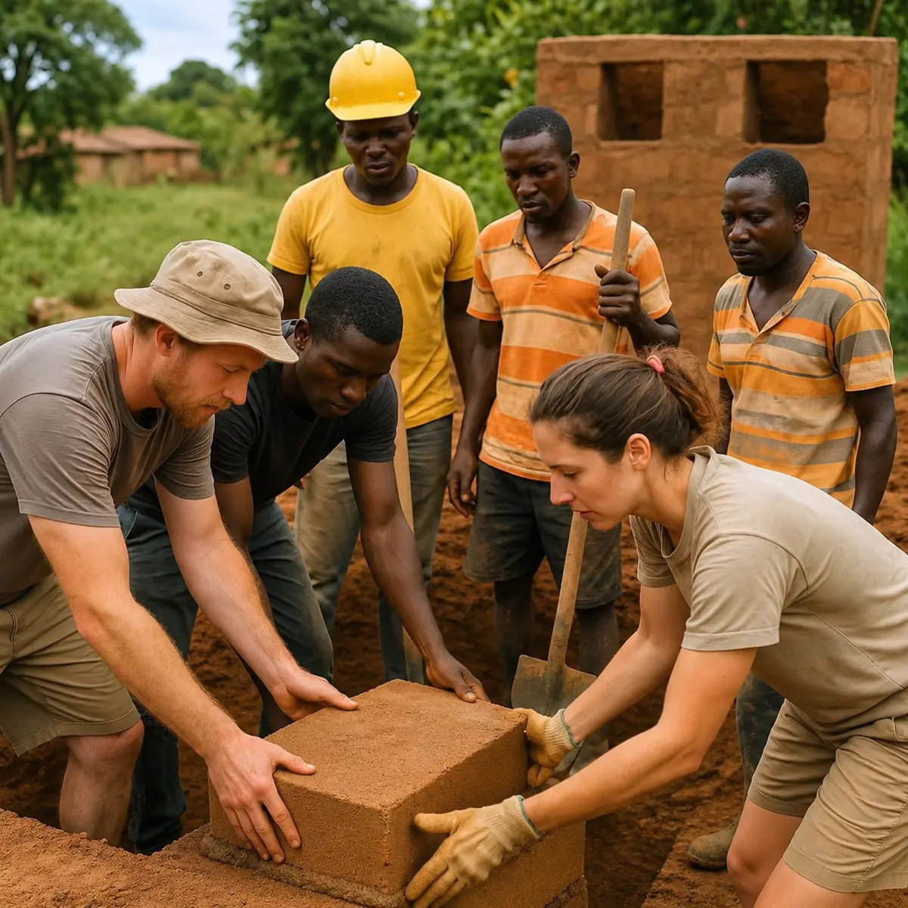
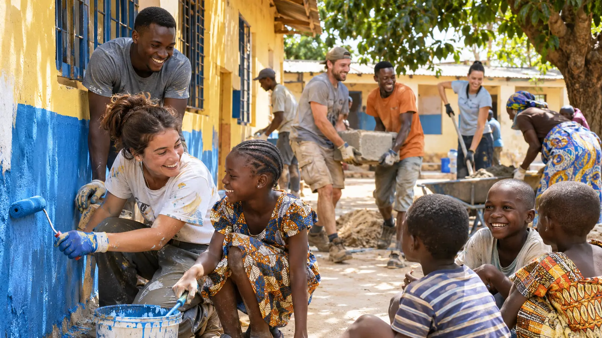
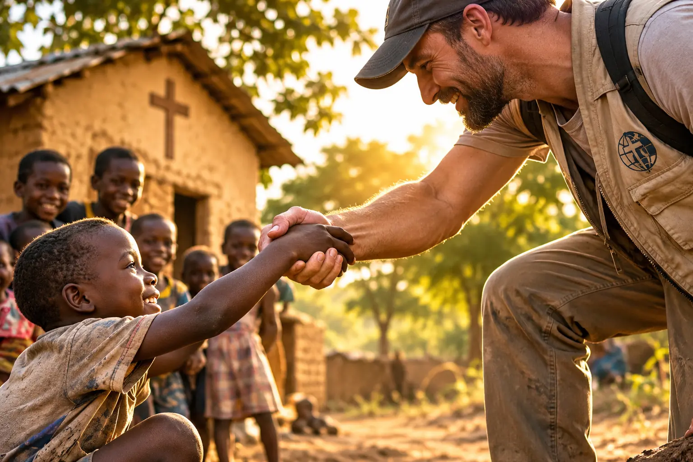
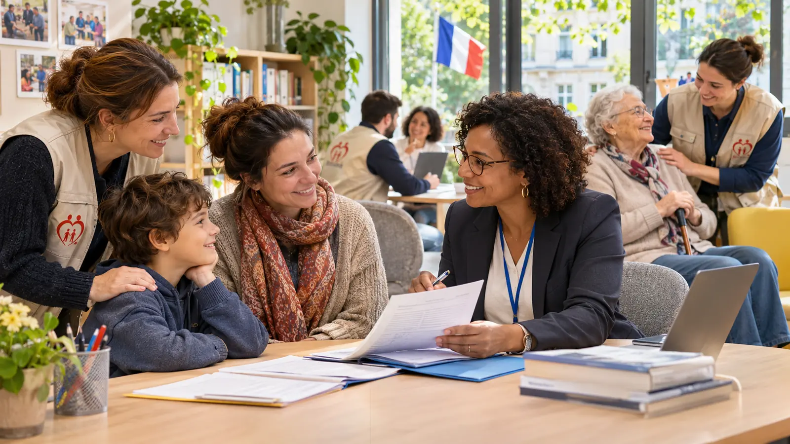
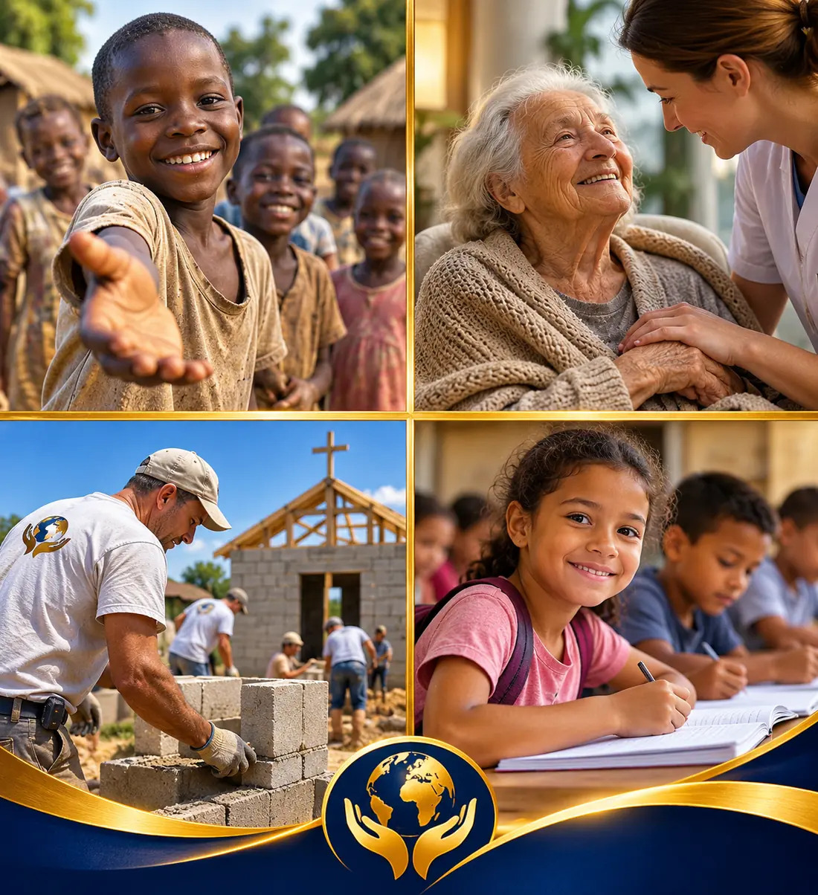
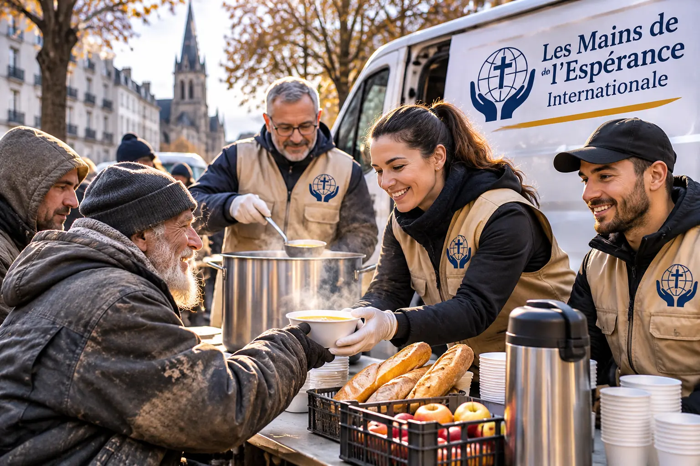

Nos missions humanitaires
Bâtir, servir et transmettre l’espérance.
Au-delà des frontières, et près de chez nous.
À l’international
Guidée par les valeurs chrétiennes de foi, d’amour et de solidarité, notre association souhaite apporter une aide concrète aux populations qui en ont le plus besoin.
À travers l’engagement de bénévoles et de professionnels mettant leurs compétences au service des autres, nous voulons participer à des projets durables qui améliorent les conditions de vie des communautés.
Chaque projet est pensé pour répondre aux besoins réels des populations, dans un esprit de coopération, de respect et de partage.
Construction et rénovation d’églises.
Dans certaines régions du monde, les communautés chrétiennes ne disposent pas de lieux adaptés pour se réunir, prier et partager leur foi.
Notre mission consiste à soutenir la construction et la rénovation de petites églises, en mobilisant des bénévoles et des artisans qualifiés. De la maçonnerie à la charpente, en passant par la couverture et les travaux de rénovation, nous souhaitons mettre notre savoir-faire au service de ces communautés.
Chaque pierre posée est un geste de foi, de fraternité et d’espérance.

Soutien aux orphelinats et aux structures d’accueil.
De nombreux enfants grandissent dans des conditions difficiles, parfois privés de ressources essentielles, de sécurité ou d’un environnement adapté.
Notre association souhaite contribuer à l’amélioration de leurs conditions de vie en participant à la rénovation et à l’aménagement d’orphelinats et de structures d’accueil. Nos actions pourront également comprendre l’apport de fournitures scolaires, de vêtements, de matériel et d’équipements nécessaires au quotidien.
Offrir à chaque enfant davantage de sécurité, de dignité et d’espoir pour l’avenir.

Accès à l’eau potable.
L’accès à une eau propre et potable demeure un défi majeur pour de nombreuses populations. Nous souhaitons soutenir des projets permettant aux communautés les plus vulnérables de bénéficier d’un accès durable à l’eau.
Selon les besoins locaux et les moyens réunis, ces initiatives pourront concerner la réalisation de puits, l’installation de systèmes de filtration ou le soutien à des infrastructures de traitement et de distribution d’eau, en partenariat avec les acteurs locaux et les professionnels compétents.
Parce que l’eau est essentielle à la vie, faciliter son accès, c’est protéger la santé et l’avenir de familles entières.

Ensemble, construisons l’espérance.

Notre premier projet
Mission de reconnaissance au Togo.
Notre première mission de reconnaissance est prévue au Togo, du 11 au 17 février 2027, afin d’identifier les besoins sur le terrain et de préparer de futures actions humanitaires : rénovation de bâtiments et amélioration des conditions d’accueil des enfants.
Chaque engagement bénévole, chaque partenariat et chaque contribution peut nous aider à transformer ces projets en réalisations concrètes.
- Départ
- 11 février 2027Identifier les besoins sur le terrain
- Retour
- 17 février 2027Préparer de futurs travaux
En France · Protéger l’enfance en danger
Lutter contre la pédocriminalité.
Protéger les enfants, soutenir les victimes et agir pour que leur parole soit entendue.
La protection de l’enfance constitue l’un des engagements majeurs de notre association en France. Les violences sexuelles commises sur des mineurs, l’exploitation des enfants et la pédocriminalité sont des réalités auxquelles notre société ne peut rester indifférente.
Derrière chaque situation se trouvent des enfants, des familles et parfois des adultes qui portent encore les conséquences de violences subies durant leur enfance. Notre volonté est de contribuer à leur protection, à leur accompagnement et à leur reconstruction, dans le respect de leur dignité et de leurs droits.

Nos axes d’action
Aucune victime
ne devrait rester seule.
-
Un réseau associatif
Ne laisser aucune victime sans accompagnement
Nous souhaitons établir des relations de coopération avec des associations spécialisées dans la protection de l’enfance, la lutte contre les violences sexuelles et l’accompagnement des victimes : soutien psychologique, aide juridique, prévention, accompagnement des procédures judiciaires.
Notre objectif est de favoriser la complémentarité de ces structures, à l’échelle départementale, régionale ou nationale, afin que chaque maillon de la chaîne de protection puisse jouer pleinement son rôle.
-
Jusqu’à la justice
Accompagner les victimes dans leurs démarches
Signalement, protection, dépôt de plainte, examens médicaux, accompagnement psychologique, constitution d’un dossier, procédures judiciaires : nous souhaitons favoriser l’orientation des victimes et de leurs familles vers les professionnels capables de les accompagner à chaque étape.
Lorsque nos moyens le permettront, et dans un cadre adapté, nous voulons contribuer au financement de certaines aides juridiques ou dépenses liées à la défense des victimes, en collaboration avec les structures compétentes.
-
Prévenir
Sensibiliser et protéger
Soutenir des initiatives de sensibilisation destinées aux familles, aux éducateurs et au grand public, pour mieux faire connaître les dangers, les signes d’alerte et les dispositifs existants, dans le respect de la confidentialité et de la sécurité des enfants.
-
Agir ensemble
Pour que la justice puisse suivre son cours
Il ne s’agit pas de nous substituer aux enquêteurs, aux magistrats, aux avocats ou aux services de protection de l’enfance, mais de soutenir le travail des acteurs compétents en apportant, selon nos possibilités, un soutien humain, matériel ou financier.
Parce qu’aucun enfant ne devrait subir la violence dans le silence.
En France · Accompagner nos aînés
Personne ne devrait vieillir dans l’oubli.
Parce que nos aînés méritent respect, dignité et attention, nous souhaitons venir en aide aux personnes âgées en situation de dépendance, de précarité ou d’isolement.
Notre ambition est de soutenir des associations et des initiatives qui contribuent à améliorer leur quotidien, à préserver leur autonomie lorsque cela est possible et à leur apporter un accompagnement humain et matériel adapté.
Nous souhaitons notamment participer au financement de projets favorisant le maintien du lien social, l’amélioration des conditions de vie et le soutien aux personnes âgées les plus vulnérables.
Chaque geste de solidarité peut faire la différence.

Près de chez nous
La solidarité commence aussi à notre porte.
Nous souhaitons également développer des initiatives locales pour venir en aide aux personnes isolées, aux familles en difficulté et à celles et ceux qui traversent des moments difficiles.
Distribution de repas, actions d’entraide, événements solidaires et mobilisation de bénévoles font partie des initiatives que nous aimerions progressivement mettre en place.
Rejoindre les bénévoles ›
Ensemble
Tendons la main.
Chaque engagement bénévole, chaque partenariat et chaque contribution nous aide à transformer ces projets en réalisations concrètes.